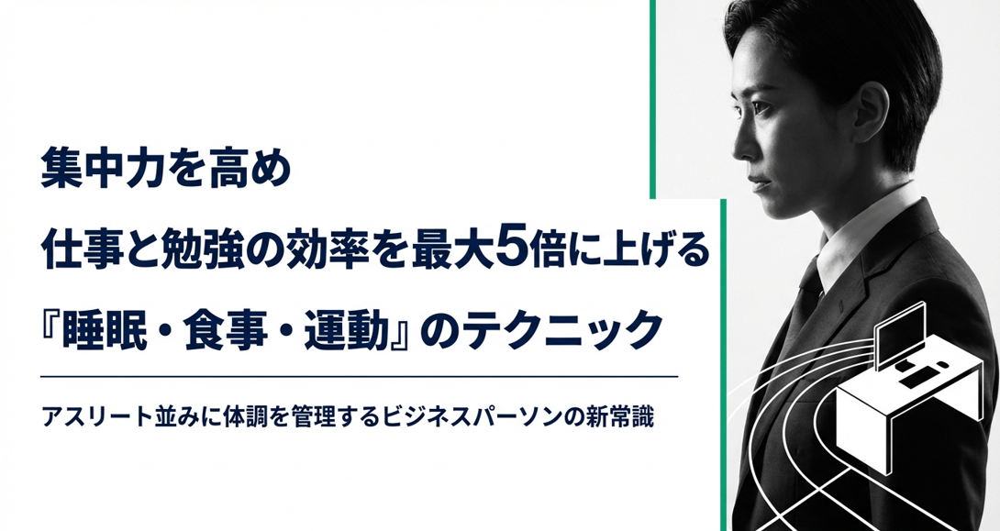
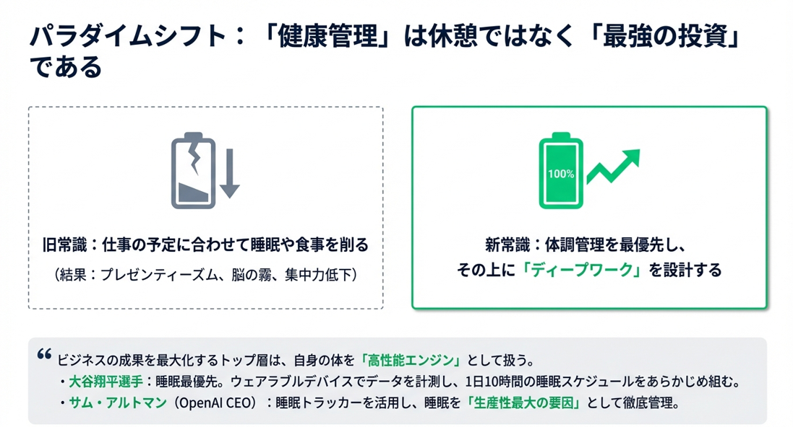
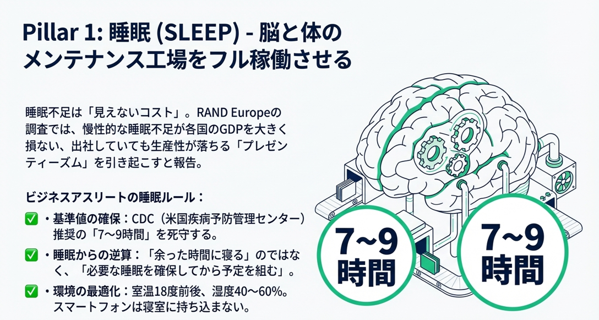
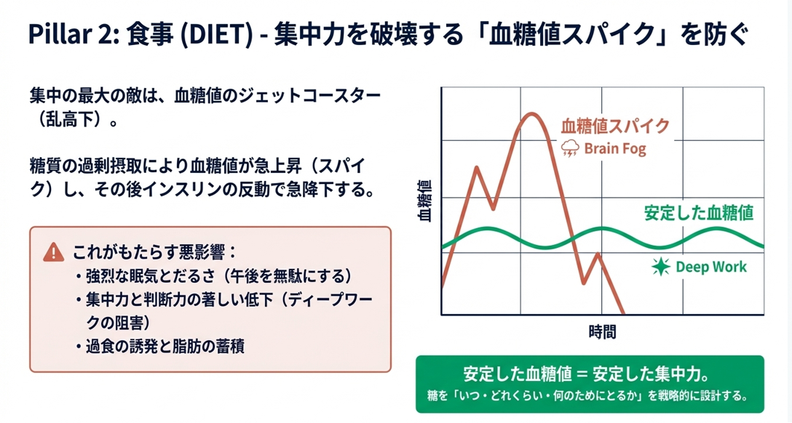
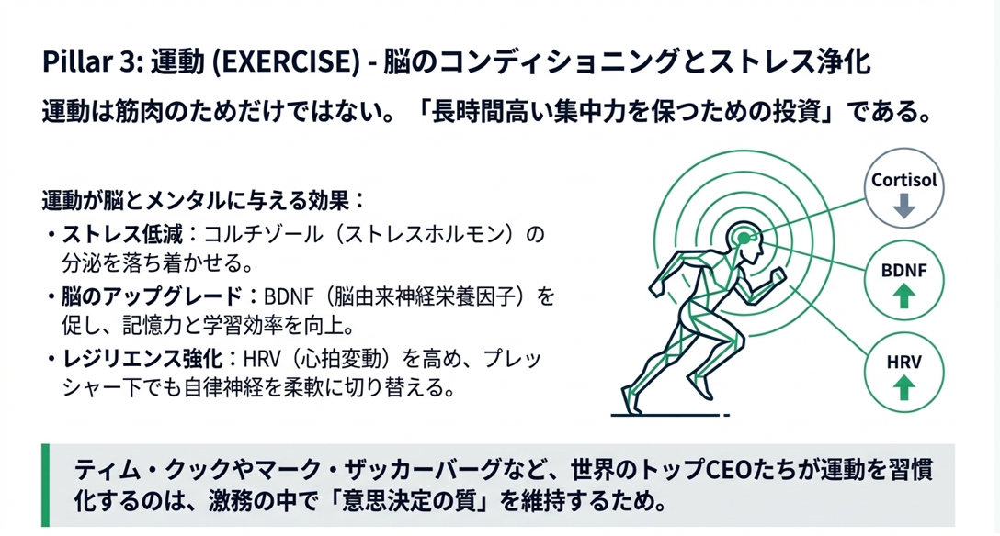
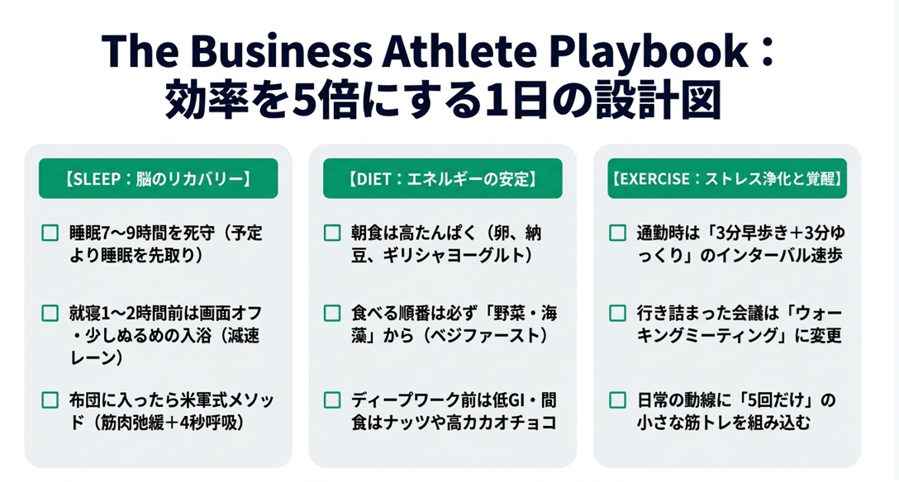
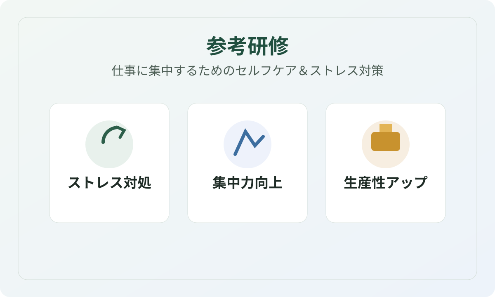

第1章
睡眠編
睡眠時間と睡眠の質を設計し、翌日の集中力を安定させる。
研修テーマ | 集中するために体調を整える
アスリート並みに体調を管理するビジネスパーソンの新常識

「眠い」「だるい」「頭が回らない」といった日常の不調を、集中力低下の構造として捉え直します。 アスリートの体調管理メソッドをビジネス向けに翻訳し、現場で回せる運用に落とし込みます。





1. 自分の集中を崩す生活パターンを特定できる
2. 3章（睡眠・食事・運動）を週単位で設計できる
3. 研修翌日から実行できる行動計画を持ち帰る
第1章
睡眠時間と睡眠の質を設計し、翌日の集中力を安定させる。
第2章
血糖値の乱高下を抑え、食後の眠気と集中切れを防ぐ。
第3章
軽運動を使って脳の覚醒レベルを整え、集中持続を支える。
目的: 睡眠を「回復」ではなく「成果を生む投資」に変える
目的: 血糖値を安定させ、食後の眠気・だるさを減らす
目的: 運動を「体力づくり」ではなく「集中準備」に変える

講師関連書籍
ランキング1位獲得
受講者数1万人超のOutlook研修で培った、現場で使える時短ノウハウを体系化。
新しいOutlookに対応し、メール処理・誤送信防止・自動化まで実務視点で解説しています。
本書はAmazonランキングで1位を獲得。多くのビジネスパーソンに選ばれている実務書です。

参考研修
インソース社で提供されている、ストレス対処と生産性向上をテーマにした公開研修です。 本ページで紹介している体調設計研修と同様に、集中力を高める実践を重視しています。
商号: 株式会社G.A.Consulting
設立: 2021年4月21日
所在地: 東京都渋谷区代々木3-31-12
連絡先: masa@vbarpa.com
講師: 伊賀上真左彦
BPR（業務革新）/RPA（業務自動化）コンサルタント。書籍執筆と企業研修を中心に、業務効率化と再現可能な現場実装を支援。